Active Directory de la DGEP#
Information
Tous les comptes Eduvaud des élèves et des professeurs sont dans une Active Directory centralisée. L’accès à l’AD est utile pour rechercher des informations sur le compte de quelqu’un ainsi que pour effectuer des manipulations telles que réinitialiser le mot de passe d’une personne par exemple. `oiQue vous soyez connectés dans le réseau du Gymnase ou pas, la procédure d’accès à l’AD est similaire au début.
Tout d’abord, installez l’application Microsoft Remote Desktop (vous pouvez la trouver sur l’App Store).
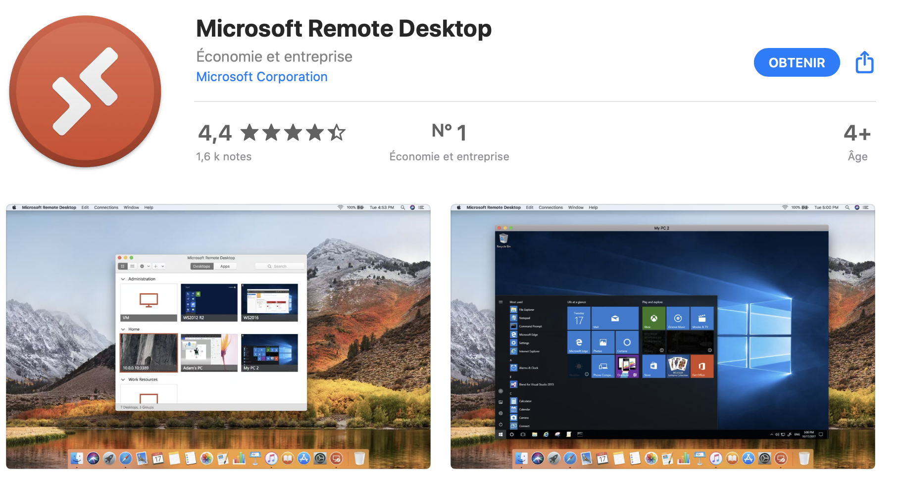{kind=link}
Ensuite, cliquez sur le petit “+” dans la barre d’outils, puis Add PC:
 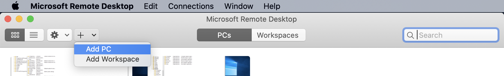
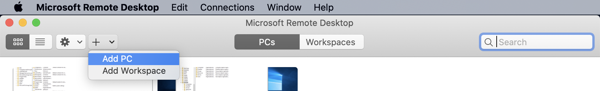
{kind=link}
Vous devriez voir le formulaire suivant :
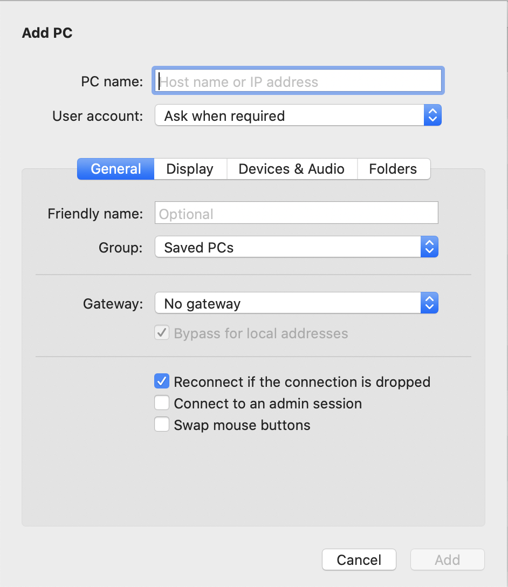{kind=link}
Dans le réseau du Gymnase#
À l’intérieur du réseau du Gymnase, il suffit d’ajouter un nouveau PC paramétré comme suit:
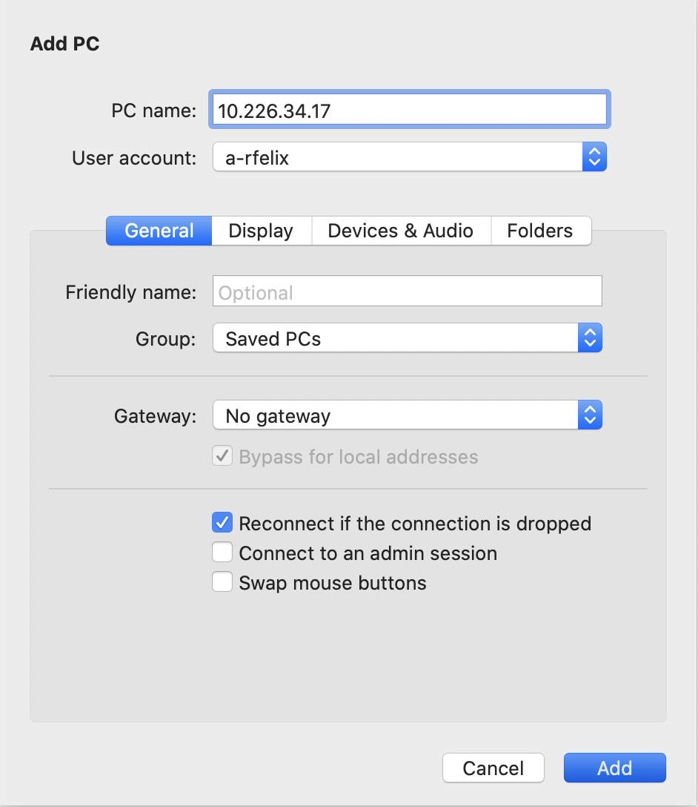{kind=link}
Pour le premier champ, PC Name, mettez l’adresse IP du serveur de la DGEP, 10.226.34.17.
Pour le deuxième champ, User Account, un compte doit être créé pour vous.
Les autres champs peuvent être laissés par défaut.
Tip
Je conseille de remplir le champ Friendly name, il vous permettra de retrouver l’ordinateur plus simplement plus tard.
Cliquez ensuite sur Add et vous devriez voir l’ordinateur suivant qui est apparu sur la page principale:
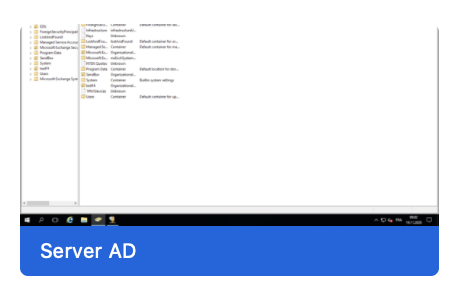{kind=link}
Comme vous pouvez le voir, j’ai mis “Server AD” dans le champ Friendly name du formulaire.
Finalement, double-cliquez sur le carré et une nouvelle fenêtre devrais s’ouvrir, vous demandant si vous voulez bien vous connecter au serveur :
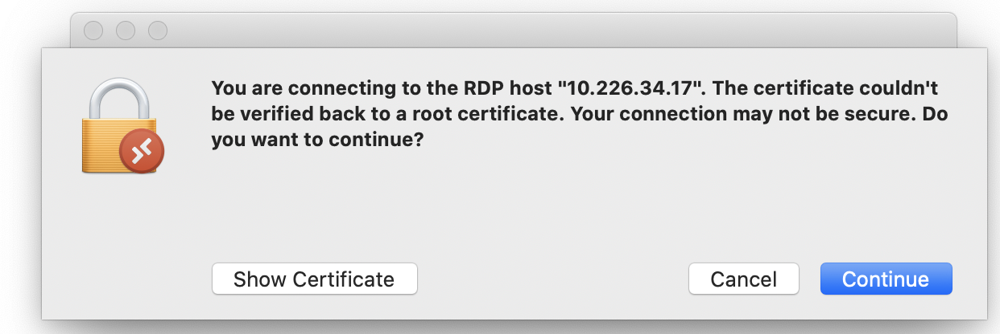{kind=link}
Cliquez sur Continue, et vous le serveur de la DGEP devrais s’ouvrir dans une nouvelle fenêtre.
Note
Le message vous préviens que le certificat n’a pas pu être vérifié. C’est simplement parce que la DGEP produit elle même ses certificats plutôt que de ses les faire créer par une entreprise externe reconnue, mais ça ne devrais pas poser de problèmes de sécurité.
Hors du réseau du Gymnase#
Hors du réseau du Gymnase, la procédure est un peu plus complexe.
Tout d’abord, ajoutez un nouvel ordinateur dans Microsoft Remote Desktop parametré comme suit :
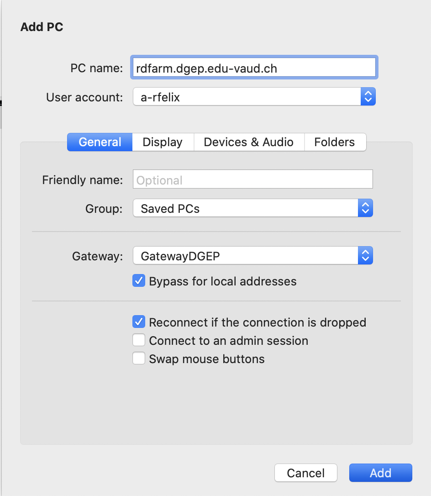{kind=link}
Avec pour l’adresse de l’ordinateur, PC name: rdfarm.dgep.edu-vaud.ch
L’User account est le même que précedemment, il doit être créé pour vous.
Un paramètre supplémentaire doit être rentré, le Gateway. Pour ce faire, cliquez sur Gateway > Add Gateway. Vous devriez voir le formulaire suivant :
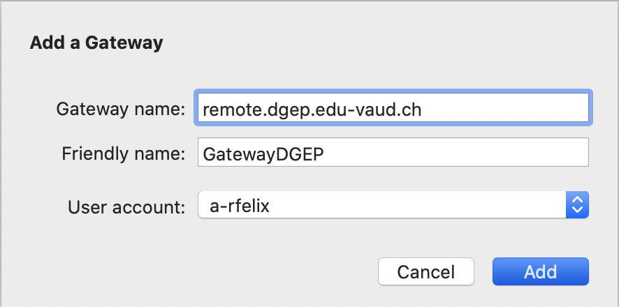{kind=link}
Dans Gateway name, mettez : remote.dgep.edu-vaud.ch
Mettez le nom que vous voulez dans Friendly name, puis votre compte dans User account.
Une fois que c’est fait, double-cliquez sur le nouvel ordinateur qui s’est ajouté et vous devriez entrer dans le bureau du serveur Windows.
Recherchez ensuite l’application Microsoft Remote Connection:
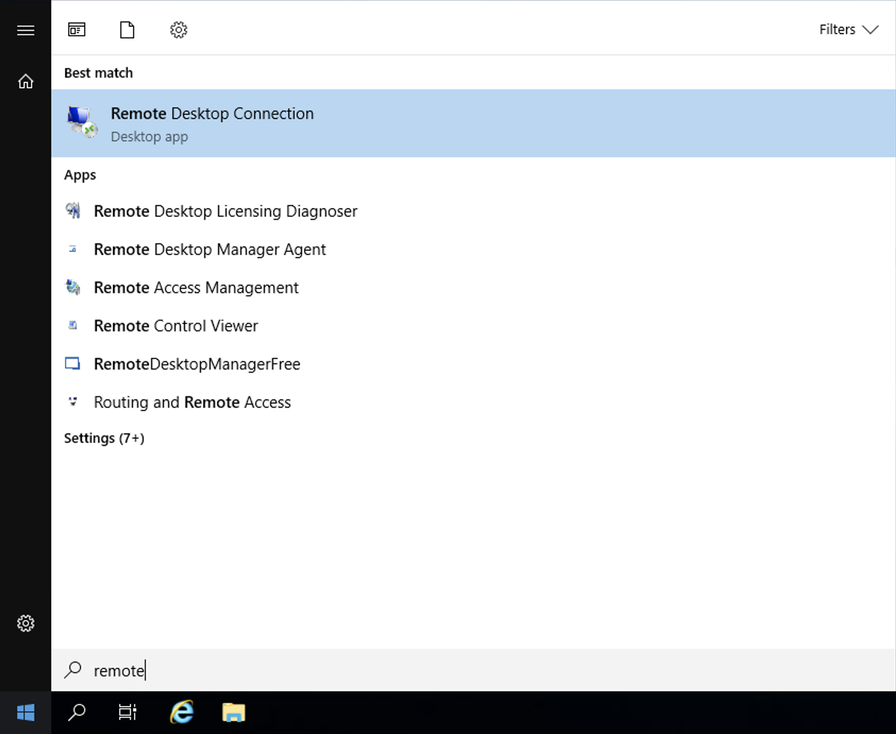{kind=link}
Ouvrez-la, vous devriez arriver sur un formulaire que vous compléterez comme suit :
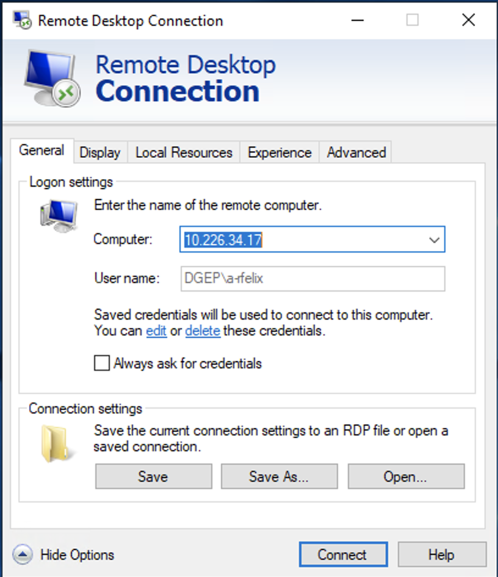{kind=link}
Dans le champ Computer, mettez l’IP, 10.226.34.17
Dans Username, mettez DGEP\<votre_id> où <votre_id> est l’identifiant qui a été créé pour vous.
Vous pouvez ensuite sauvegarder sous (Save As) cette configuration sur le bureau :
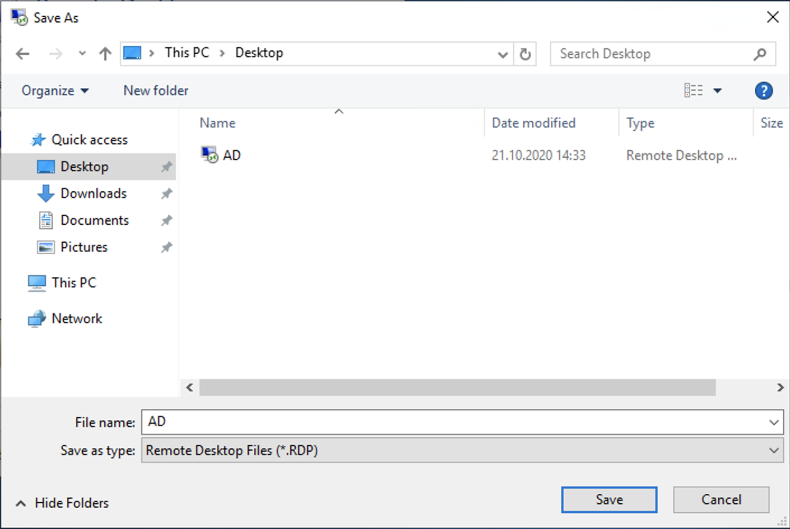{kind=link}
Il suffit ensuite de double-cliquer sur l’icône ainsi créée pour se connecter à l’Active Directory.
Rechercher un compte#
Tous d’abord il faut rechercher “Active Directory” dans la barre de recherche (en bas à gauche).
Ensuite, Sélectionnez EDU –> si possible allez sous dossier GYCHA
Double-cliquez sur la loupe pour mener une recherche de compte. (elle se trouve au-dessus des dossiers dans la barre d’outils prêts du filtre).
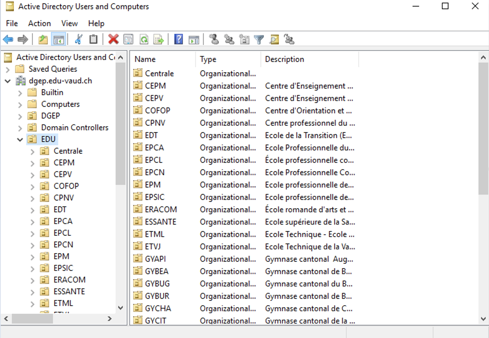{kind=link}
Notez le nom, le prénom ou les deux et validez la recherche de compte.
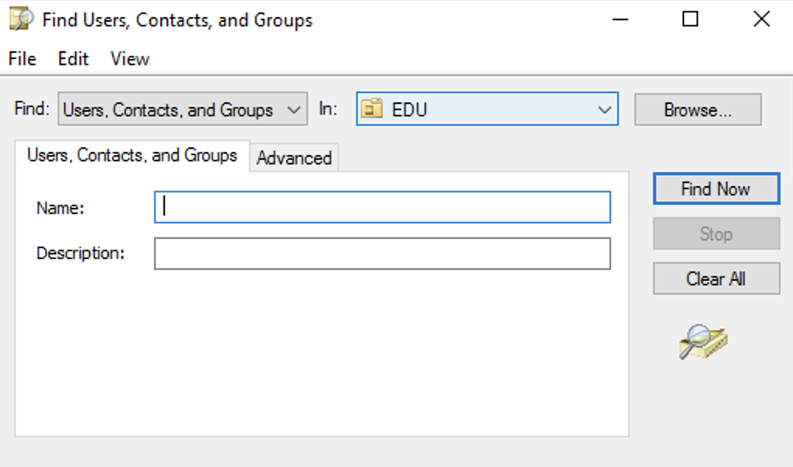{kind=link}
Normalement le compte utilisateur devrait apparaitre. Si cela ne marche pas, essayer d’effectuer la recherche plus loin (Genre : dgep.edu-vaud.ch)
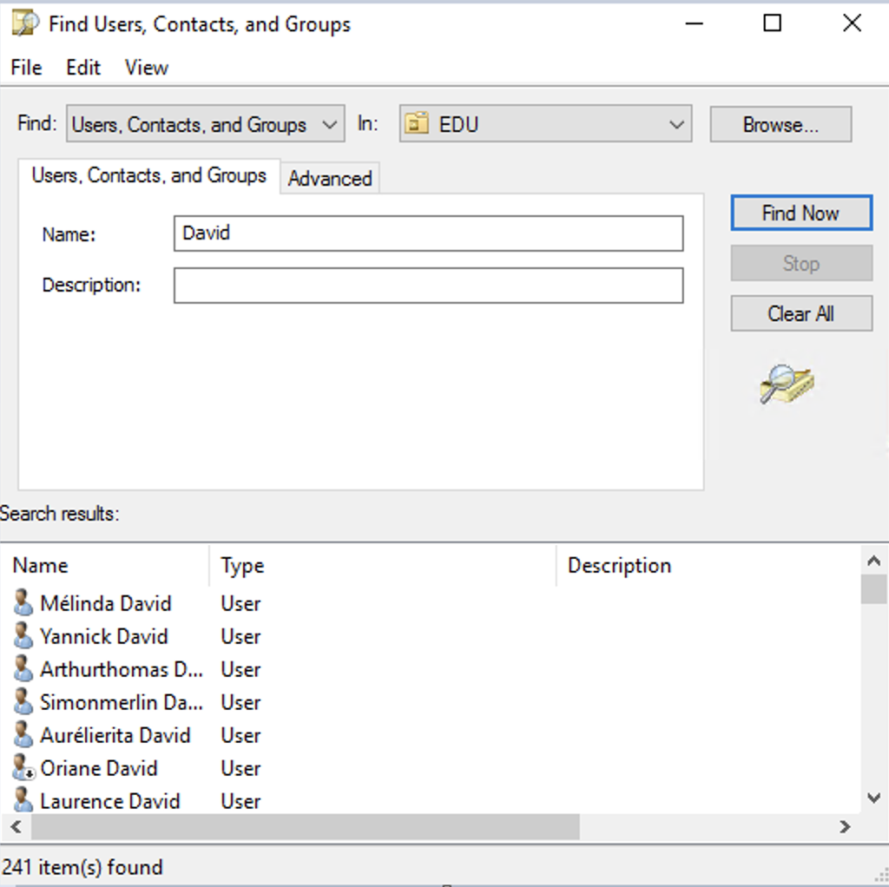{kind=link}
Faite un clic-droit sur un des comptes et sélectionnés “propreties”.
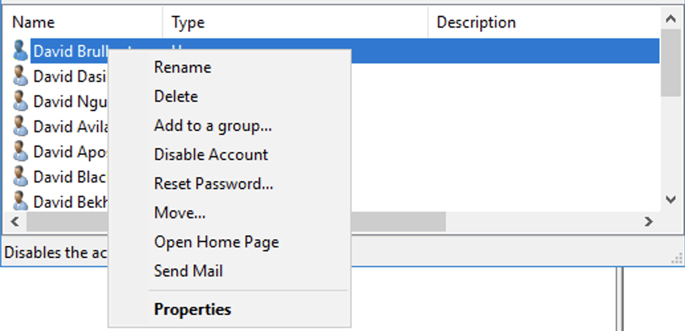{kind=link}
Dans “General” vous pouvez voir son email.
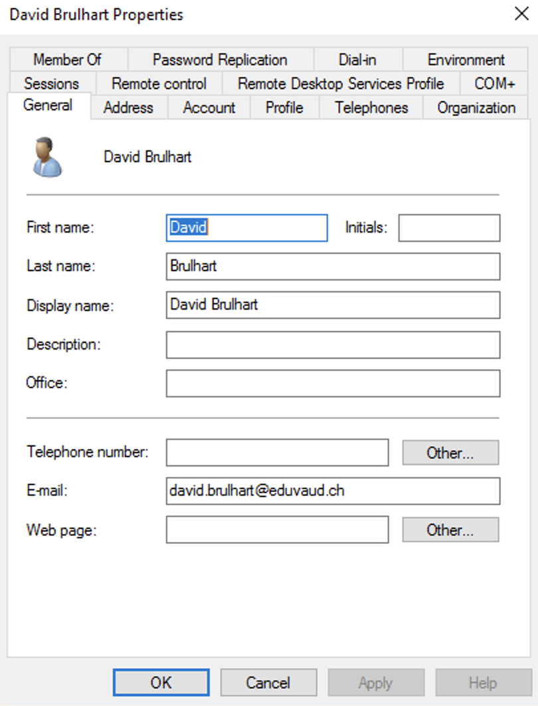{kind=link}
Dans “Account” vous pouvez voir ses identifiants et son email.
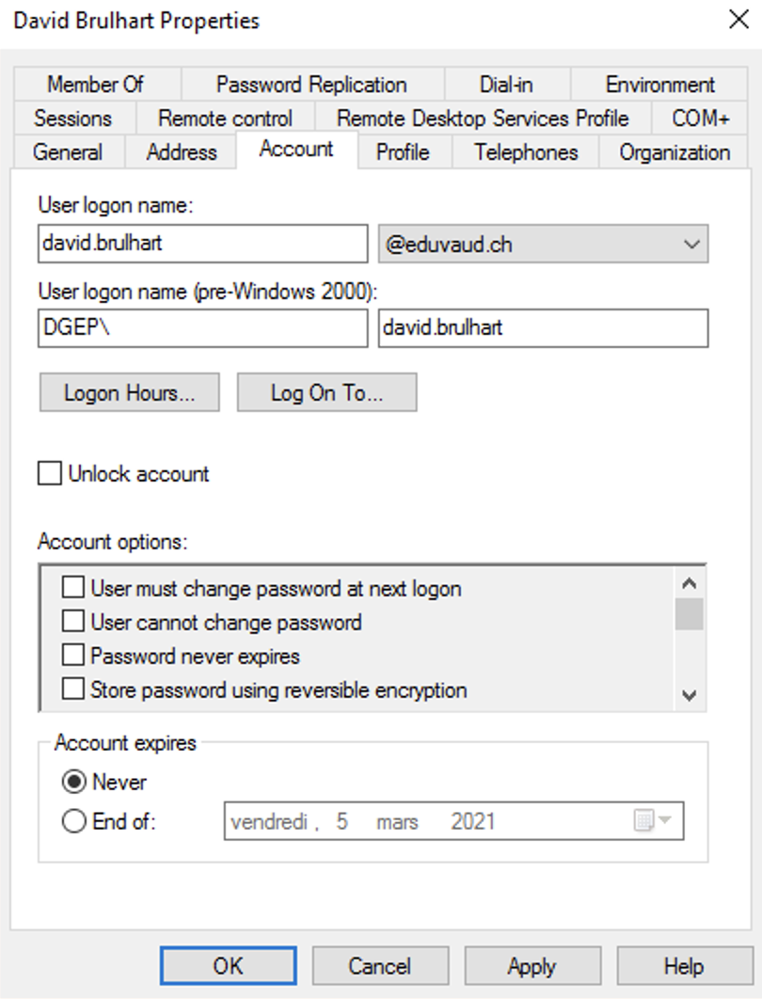{kind=link}
Réinitialiser le mot de passe d’une personne#
Directement dans l’AD#
Rendez-vous sur le résultat de la recherche des comptes utilisateurs.
Clic-droit sur le nom de l’utilisateur qui est affiché et cliquez sur reset password.
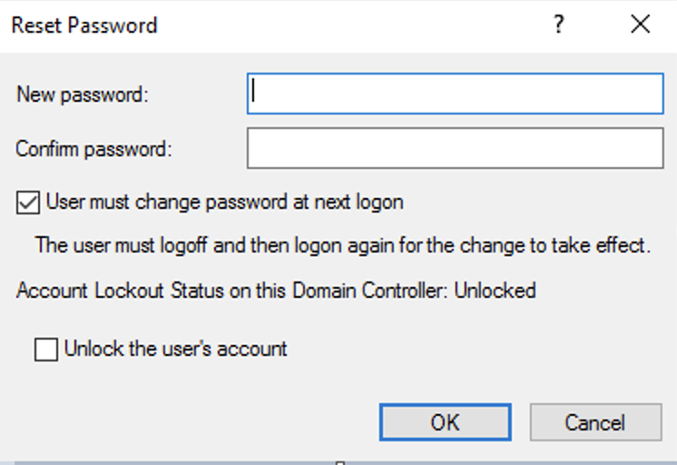{kind=link}
Générer un code grâce à …
Cochez l’option pour que l’utilisateur aille la possibilité de changer son mot de passe. Si vous n’avez pas le droit de cocher l’option, c’est que l’utilisateur ne fais pas partie du gymnase
Envoyez un mail de confirmation à la personne.
Voilà maintenant vous savez tout.
Grâce au script python#
Télécharger sous Teams les fichiers “reinitpwd.py” et “Réinitialisation mdp Eduvaud.txt” (à télécharger dans le dossier voulu).
Dans le terminal se placer dans le dossier où se trouve les fichiers téléchargés (”cd /le chemin”).
Le package python “ldap3” doit être installé pour que le script fonctionne. Si ce n’est pas le cas il faut d’abord taper dans le terminal: “python3 -m pip install ldap3” (à ne faire que la première fois).
Dans le terminal taper la ligne “python3 reinitpwd.py”.
Suivre les instructions dans le terminal.